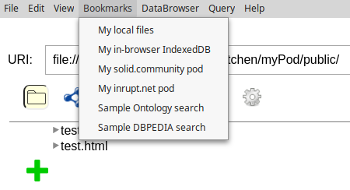
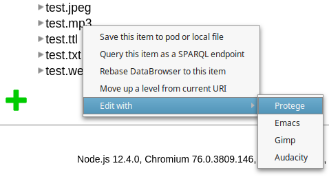
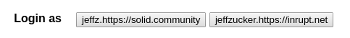

The Data Kitchen is a stand-alone version of the mashlib DataBrowser. It has a number of features and a few differences in interface not found in the standard version. Please at least skim this quick tour to get an idea of the differenenes.
The Data Kitchen, unlike the standard version, supports using the DataBrowser to create, view, edit, and delte local files and browserFS storage files without a server.

A context menu integrates the DataBrowser with file management and SPARQL querying and provides extra DataBrowser navigation. Right-click (ctrl-click for Mac) on any DataBrowser item or link. The file manager supports saving or moving documents between your local file system and remote pods. SPARQL Query results are displayed as a table in which each term links back to a DataBrowser view of that term.

Logging in is not needed for read/write of local resources or read of public resources. For writing to protected pods, use the login button. If you configure identities in config.json, you can auto-fill the login form from your pre-defined identites. Change identities on the fly, or even open two different data-kitchen windows with two identites simultaneously. Chat with yourself!

You can use shortcuts in the DataBrowser, file manager, and query form. Shortcuts allow you to quickly specify local and remote files relative to a URL of your choosing. Vocabulary shortcuts support quick searches, for example :
@ldp ----> http://www.w3.org/ns/ldp
@ldp:Container ----> http://www.w3.org/ns/ldp#Container
See Help - Using the Kitchen for more details.